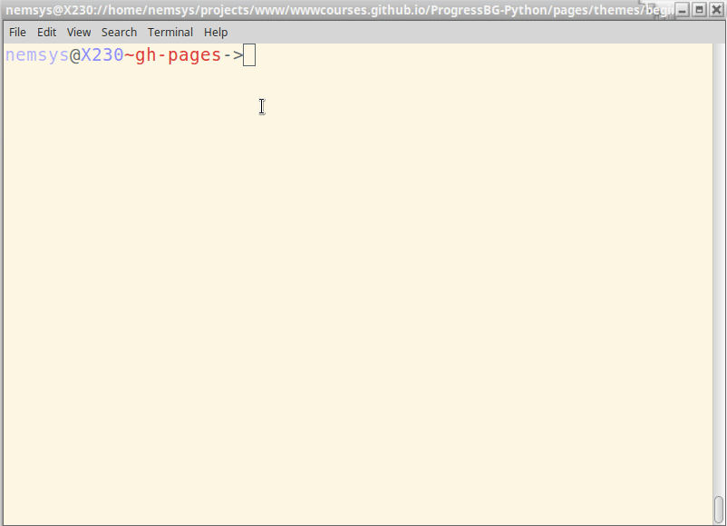
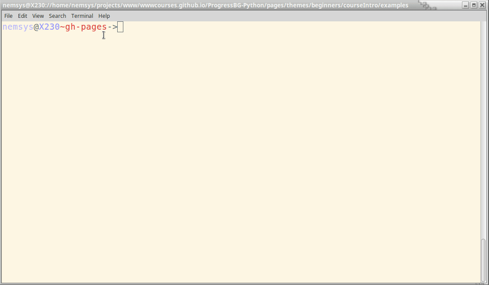

Installing Python Packages - the safe way
Created for
Iva E. Popova, 2021,

PIP - the Python Package Manager
PIP - the Python Package Manager
- Python has a strong community which releases lot's of modules(packages), which you can use for free and focus on "get job done", instead of reinventing the wheel.
- pip is the tool for installing Python packages from PyPI (Python Package Index)
- Note, that by using pip, a package will be installed in your system's python distribution.
pip basic commands
- get help on pip:
- pip help
- list installed packages:
- pip list
- install a package from PyPI:
- pip install package_name
- uninstall a package
- pip uninstall package_name
- list outdated packages:
- pip list --outdated
- upgrade a package:
- pip install --upgrade SomePackage
More readings
Python Virtual Environments with Pipenv
Python Virtual Environments with Pipenv
Virtual environment - Why?
- Python apps usually depends on many modules(packages), which depends on other packages, and very often - from a specific version of a package.
- Many system tools also depends on specific versions of installed Python packages.
- You don't want to pollute your system's Python environment!
Virtual environment - What?
- Virtual environments create an isolated Python environment for your project.
- Keep workflows between projects independent.
- Keeps dependency hell away.
- There are many tools for working with virtual environments in Python (virtualenv, pyenv, venv, virtualenvwrapper) ... and pipenv
Pipenv - What?
- A dependency and virtual environments manager combined into one.
- Automatically creates and manages a virtualenv for your projects.
- The officially recommended Python packaging tool
- Functionally similar to npm and other modern package managers.
Pipenv - Install
$ pip install --user pipenv
# or if you are on UNIX based system with python2 default:
pip3 install --user pipenv
Pipenv - set up PATH
- If pipenv isn’t available in your shell after installation, you'll need to add the user base's binary directory to your PATH.
- find the user base binary directory, and:
- Linux and macOS:
- Windows:
- You may need to log out for the PATH changes to take effect.
python -m site --user-base
# /home/username/.local
# add it to your ~/.profile or ~/.bashrc file, or:
export PATH=$PATH:/home/username/.local/bin
python -m site --user-site
#C:\Users\Username\AppData\Roaming\Python36\site-packages
# add to PATH:
C:\Users\Username\AppData\Roaming\Python36\Scripts
Pipenv - manage virtualenv
### Create virtualenv with system Python3:
$ pipenv --three
Creating a virtualenv for this project…
### Spawn a shell within the virtualenv
$ pipenv shell
Spawning environment shell...
### Exit the virtualenv
(course_intro-SmgljMaj) $ exit
exit
$
### Output virtualenv information
$ pipenv --venv
### Remove the virtualenv
$ pipenv --rm
Removing virtualenv...
All options available with: pipenv --help
PIPENV_VENV_IN_PROJECT
- Pipenv creates virtualenv automatically for you and stores it in a predefined path and gives it a random prefixed name.
- There is no way to control the name of the virtual environment being created.
- But if you set the environment variable
PIPENV_VENV_IN_PROJECT=1, pipenv will store the virtualenv in.venv/folder per project bases and will name the virtualenv after your project name.
Pipenv - manage packages for your project
### install requests package and create a virenv, if there is no one
$ pipenv install requests
Installing requests…
### remove package
$ pipenv uninstall requests
Uninstalling requests-2.18.4
List as a graph the installed packages for the given virtualenv
$ pipenv graph
Use the installed module in your program
- Create a file
my_ip.py - Write in it:
- Execute your program within the pipenv shell:
import requests
response = requests.get('https://httpbin.org/ip')
print('Your IP is {0}'.format(response.json()['origin']))
(course_intro-SmgljMaj) $ python my_ip.py
Exit the virtual environment
exit
Or type ctrl-d
Or close your terminal window :)
Let pipenv install Python distribution
- You can create a virtual environment with any Python version, without the need to have it system installed
- Pipenv can install any Python version with the use of pyenv, so you have to install it.
- pyenv installation
# install pyenv
curl -L https://raw.githubusercontent.com/yyuu/pyenv-installer/master/bin/pyenv-installer | bash
# add it to path
echo 'export PYENV_ROOT="$HOME/.pyenv"' >> ~/.bash_profile
echo 'export PATH="$PYENV_ROOT/bin:$PATH"' >> ~/.bash_profile
Let pipenv install Python distribution
- Install the Requirements!
- Now, you can make pipenv to create a virtualenv with any Python version:
#Create a new project using Python 3.6, specifically:
$ pipenv --python 3.6
# you'll be asked by pipenv if you want it to install the Python 3.6, if it is not inyour system
Pipenv - note
We'll speak more on importing modules and managing dependencies in the theme "Organizing code: more on importing modules", but for now remeber just to use pipenv instead of pip whenever you want to play with some Python module/code.
pipenv - example: simple_plot with matplotlib
pipenv - example: simple_plot with matplotlib
Create the file
- create the file "simple_plot.py" in your project root folder.
- Enter in it the code bellow:
import matplotlib.pyplot as plt
import numpy as np
t = np.arange(0.0, 2.0, 0.01)
s = 1 + np.sin(2*np.pi*t)
plt.plot(t, s)
plt.xlabel('time (s)')
plt.ylabel('voltage (mV)')
plt.title('About as simple as it gets, folks')
plt.grid(True)
plt.savefig("test.png")
plt.show()
example from: matplotlib.org
Prepare terminal
- Open a terminal window and navigate to your project root folder.
- Make sure you are in it:
# navigate...
$ cd your/project/root/folder
# make sure you are in it - get your current working directory:
$ pwd
your/project/root/folder
Run the program
try to run the simple_plot.py program
$ python simple_plot.py
Traceback (most recent call last):
File "simple_plot.py", line 1, in <module>
import matplotlib.pyplot as plt
ImportError: No module named matplotlib.pyplot
Yes, an error occurs, because we do not have the required module (matplotlib) installed
Install dependencies in a virtual environment
We will install the required modules in a safe virtual environment by pipenv!
# install packages safely with pipenv:
$ pipenv install matplotlib
Creating a virtualenv for this project…
...
To activate this project`s virtualenv, run the following
$ pipenv shell
Activate the virtual environment
$ pipenv shel
Spawning environment shell...
Run the program within the virtual environment
- Run the simple_plot.py program:
- It should run now - a windows with simple plots wil be opened:

python simple_plot.py
All the steps in a gif
{kind=link}
pipenv with VS Code
pipenv with VS Code
- The new versions of VSCode automatically find pipienv environment, if one is set up.
- Using Python environments in VS Code
- If you have problems - continue with following slides
Set up manually the virtual environment's python path:
# navigate to project folder
$ cd your/root/project/folder
# get into pipenv shell
$ pipenv shell
(my_project-hUoR8K1v) $
# get python path and copy it
(my_project-hUoR8K1v) $ which python
/home/nemsys/.local/share/virtualenvs/my_project-hUoR8K1v/bin/python
Set up manually the virtual environment's python path
- Open VS Code project workspace settings.
- ctrl+shift+p and find
Preferences: Open Workspace Settings - search for
python.pythonPathin left panel - click "edit" icon and "copy to settings"
- in the right panel paste the pipenv venv path into the "python.pythonPath" value
Workspace settings after the change
Your workspace settings should look like:
{
"folders": [
{
"path": "."
}
],
"settings": {
"python.pythonPath": "/home/nemsys/.local/share/virtualenvs/my_project-hUoR8K1v/bin/python"
}
}
Run the program
- Right click on the editor area and select "Run Python File in Terminal "
pipenv with VS Code - as gif
{kind=link}
Resources
Resources
Readings
- The good parts:
- docs.pipenv.org
- Basic Usage of Pipenv
- Advanced Usage of Pipenv
- The bad parts:
- Pipenv: promises a lot, delivers very little
Useful video
Kenneth Reitz - Pipenv: The Future of Python Dependency Management - PyCon 2018
Useful video
Exercises
Exercises
simple_plot with matplotlib
- Look again at the "Example: simple_plot with matplotlib" and repeat the steps on your machine, such that the program "simple_plot.py" will run without errors
These slides are based on
customised version of
framework